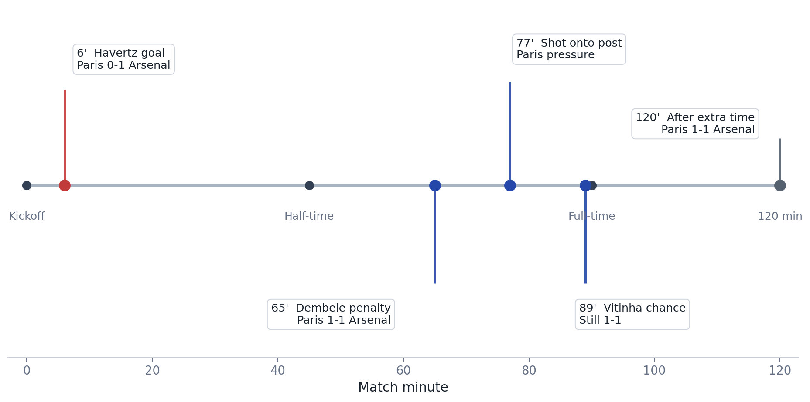

UEFA Champions League Final 2026 Match Control Analysis
Paris Saint-Germain and Arsenal finished 1-1 after extra time on May 30, 2026, before Paris won the penalty shootout 4-3. The data story is not just who won. It is how much match control Paris had before the scoreboard still stayed level for 120 minutes.
Background
The Union of European Football Associations (UEFA) match report records the final as Paris Saint-Germain 1-1 Arsenal after extra time, with Paris winning 4-3 on penalties at the Puskas Arena in Budapest. Arsenal led through Kai Havertz in the sixth minute. Paris equalized through an Ousmane Dembele penalty in the 65th minute.
Purpose
This analysis separates match control from match outcome. The goal is to show, in a few readable figures, how a final can be statistically one-sided in possession, shots, and passing volume, while still being decided by one kick in a shootout.
Method
The project uses a small, source-cited table rather than storing a heavy raw feed. Match outcome and key events come from UEFA. Control indicators come from public Opta-derived reporting: Arsenal's 24.7% possession figure, Paris' 21-7 shot advantage, and the 806-196 completed-pass comparison. Paris' possession share is inferred as 100% minus Arsenal's reported share.
Results
| Metric | Paris Saint-Germain | Arsenal | Paris / Arsenal | Source |
|---|---|---|---|---|
| Possession share | 75.3% | 24.7% | 3.05x | Opta Analyst / OptaJoe |
| Total shots | 21 | 7 | 3.00x | Opta Analyst |
| Completed passes | 806 | 196 | 4.11x | Sports Illustrated summary of match statistics |
| Goals after extra time | 1 | 1 | 1.00x | UEFA official match report |




Interpretation
The clearest read is that Paris controlled the match environment, but did not turn that control into scoreboard separation. Arsenal scored early, defended deep, and kept Paris to one goal across normal and extra time. That makes the final a useful example of the gap between territorial control and outcome control.
The completed-pass gap is especially strong: Paris completed more than four passes for every one Arsenal completed. The shot gap is also large, but the 120-minute score stayed 1-1. That tension is the main story for a public data post.
Limitations
- Possession, pass, and shot counts can differ by provider definitions. This report keeps the provider notes visible rather than blending incompatible feeds.
- This is a descriptive analysis of one final, not a tactical model or player-evaluation model.
- Expected goals and shot locations are not included because the most accessible public xG values were less directly sourceable than the control metrics used here.
Next Steps
- Add shot-location or expected-goals data if a stable public source is available.
- Compare this final with other Champions League finals that reached penalties.
- Build a small benchmark of finals where control metrics and final score diverged sharply.
Sources
- UEFA official match report: Final score, timeline events, penalty failures, and player of the match.
- Opta Analyst match report: Shots, possession record, first-half pass fact, and shootout sequence.
- Sports Illustrated match-stat summary: Completed-pass comparison and Opta possession note.